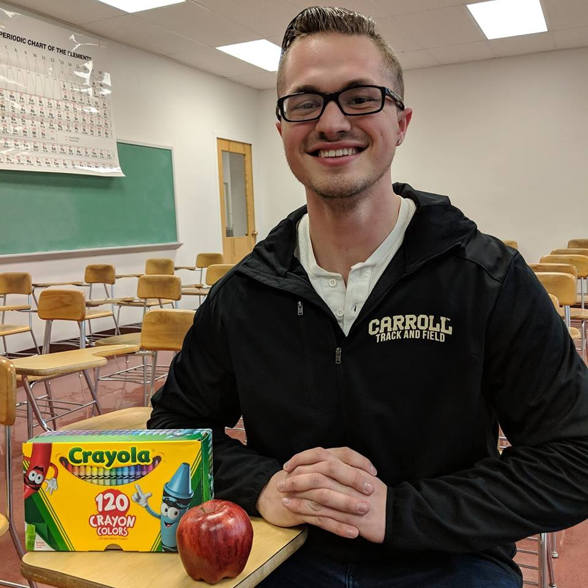

 Welcome to the premier beer reviewing website "What's Up Brews?" where we're literally all about good pours and mouth-feel. Please check the navigation for a list of our reviews, or if you're looking for the top brews on the market, then look no further than our Favorite Beers category!
An elite in the beer reviewing scene, Jakob Plagenz is a Senior Biochemistry student who throws for the Carroll College Track and Field Team. He has a long, storied history with ironically speculating on the quality of beers and misusing phrases like mouth feel. To find out more, click the About section at the top!
If you enjoy my reviews and want to help the cause, donate below to help buy me another beer!